Informe final
CARÁTULA
Curso: Análisis de Datos
Profesor: Stefany Neciosup
Código del curso: 1INF03
Fecha de Entrega: 02/07/2022
Integrantes:
- Richle Gianotti, Renzo Ernesto - 20180368
- Cornejo Ramírez, Lucio Enrique - 20192058
- Vivas Alejandro, Claudia Mirela - 20141150
- Mejia Padilla, Andrea Adela - 20180824
INTRODUCCIÓN
Para comprender la dinámica de la industria musical, antes que nada, es necesario saber que no se trata de una sola, sino de varias, estrechamente relacionadas entre sí, pero que surgen a partir de lógicas y estructuras distintas. La industria musical en su conjunto vive de la creación y la explotación de la propiedad intelectual musical. Compositores y letristas crean canciones, letras y arreglos que se interpretan en directo sobre el escenario, se graban y distribuyen a los consumidores. Esta estructura básica ha dado lugar a tres industrias musicales centrales: la discográfica, centrada en la grabación de música y su distribución a los consumidores; la de las licencias musicales, que sobre todo concede licencias a empresas para la difusión de composiciones y arreglos; y, la música en vivo, centrada en producir y promocionar espectáculos en directo, como conciertos, giras, etc.
El desarrollo de la Ciencia de Datos permite el uso de data para mejorar la toma de decisiones en el sector público y privado. La industria musical no es la excepción, pues también existe un interés por generar nuevas canciones populares, con el fin de recuperar los costos de produccion de una canción y maximizar márgenes de ganancia. En base a tal problemática, se desarrolla el presente trabajo con el objetivo de desarrollar un modelo que logre predecir la propularidad de las canciones futuras, como resultado de un análisis de las variables que influyan de manera positiva o negativa en la popularidad de las canciones. De esta forma, el modelo análitico podrá ser utilizado para predecir la popularidad de las canciones, lo cual ayudará a tomar decisiones de manera más efectiva.
Estas son algunas de las interrogantes que se explorarán en este trabajo:
- ¿Qué características en común tienen las canciones más populares de Spotify?
- ¿Existe una correlación entre la popularidad y alguna característica de las canciones?
- ¿Cuánto debe durar un track según los estándares de la actualidad?
CAPÍTULO I: COMPRENSIÓN DEL NEGOCIO / ESTUDIO
Descripción del problema
Se puede tener una percepción de las canciones más populares a nivel mundial observando la cantidad de reproducciones de cada canción en las plataformas musicales, lo cual se traduce en mayores ganancias para los artistas, empresas discográficas y todas las personas detrás del lanzamiento de una canción. En este contexto, la popularidad es la variable que determina los márgenes de ganancias de la industria musical, así un problema y preocupación recurrente, dentro de la industria musical, es generar canciones populares
Objetivo del negocio/estudio
Nuestro objetivo principal es desarrollar un modelo que logre predecir si una canción será popular o no antes de ser lanzada al mercado. Además, nuestro objetivo secundario, es conocer las características que hacen popular a una canción.
Variable objetivo para el negocio
- “Popularity” es la variable objetivo.
CAPÍTULO II: FUENTES DE INFORMACIÓN
Origen de los datos del proyecto
El dataset que empleamos lo descargamos de Kaggle de donde usamos el archivotracks.csv. Como se describe en el sitio web del link previo, el dataset tracks.csv se obtuvo vía el API oficial de Spotify. Esta permite descargar, características de las canciones disponibles en la plataforma tales como su duración en milisegundos, volumen, qué tan bailable es, etc.
Así, cada fila en tracks.csv representa a una canción diferente en Spotify, y, las columnas del dataset representan características ─variables─ asociadas a cada canción.
Descripción del universo y muestra
El universo de datos está conformado por el conjunto de canciones de Spotify disponibles en el instante de tiempo en que se descargó el dataset, vía la API oficial de Spotify. En la página web, fuente de descargamos la data, se menciona que las canciones extraídas fueron publicadas entre los años 1921 y 2020. Asimismo, la muestra tiene y 20 columnas.
En ese sentido, la muestra consiste en el conjunto de canciones de Spotify de las cuales tenemos información en las filas del dataset descargado ─586672 observaciones ─ y 20 columnas. No obstante, esta muestra es arbitraria, ya que no se especifica la estrategia de muestreo. A nivel de grupo, discutimos la importancia del muestro y concluimos que, para realizar un análisis riguroso necesitaremos realizar una muestro multietápico diseñado por nosotros mismo, pero por la limitación de tiempo, seguiremos usando la data original.
La arbitrariedad de la muestra se refleja en algunas fallas que detectamos en la etapa de exploración de los datos, pues tras analizar la data descargada, observamos que los años de lanzamiento de las canciones se encuentran en el rango de 1900 a 2021. Es decir, existen, observaciones que están fuera del rango de años especificados en la fuente secundaria ─Kaggle─. Específicamente encontramos que, el año de lanzamiento de una canción del dataset fue en 1990, sin embargo, tras realizar una pequeña una búsqueda web, hallamos que la banda que creó tal canción aún sigue activa. En otras palabras, es imposible que, en caso la banda lanzará la canción en 1990, siga activa.
Es plausible afirmar que la data que disponemos tenga algunas fallas, lo cual debería subsanarse para obtener un mejor resultado. Durante las reuniones de equipo, evaluamos scrappear las canciones de Spotify empleando el API oficial de Spotify para obtener la data de las canciones cuyo identificador ya se posee, gracias al dataset descargado. Esto último con el fin de crear un nuevo dataset, ahora sin errores, con el cual trabajaríamos como base datos de este proyecto. También evaluamos descartar a las filas donde encontremos errores como el mencionado previamente respecto a la fecha de publicación de la canción. No obstante, por limitaciones de tiempo, llevamos al consenso de continuar el dataset original.
Por otro lado, la muestra contiene las siguientes columnas:
# Data numérica previo a imputación
dfnum_pre_imp = pd.read_csv("../datos/dfnum_pre_imp.csv")
# Data categórica previo a transformación de variables
dfcat_pre_trans = pd.read_csv("../datos/dfcat.csv")# Tabla de descripción básica de las variables numéricas
DT::datatable(py$temp_df)A continuación, graficamos la densidad de las variables numéricas, además de rectas verticales para representar la media (rojo), mediana (verde), cuartiles 1 y 3 (negro); y los whiskers definidos, en amarillo.
Loudness
Describe la sonoridad general de una pista en decibeles. Los valores de sonoridad se promedian en toda la pista y son útiles para comparar la sonoridad relativa de las pistas. La sonoridad es la cualidad de un sonido que es el principal correlato psicológico de la fuerza física (amplitud). Los valores suelen oscilar entre -60 y 0 db.
C:\Python39\lib\site-packages\seaborn\distributions.py:2619: FutureWarning: `distplot` is a deprecated function and will be removed in a future version. Please adapt your code to use either `displot` (a figure-level function with similar flexibility) or `histplot` (an axes-level function for histograms).
warnings.warn(msg, FutureWarning)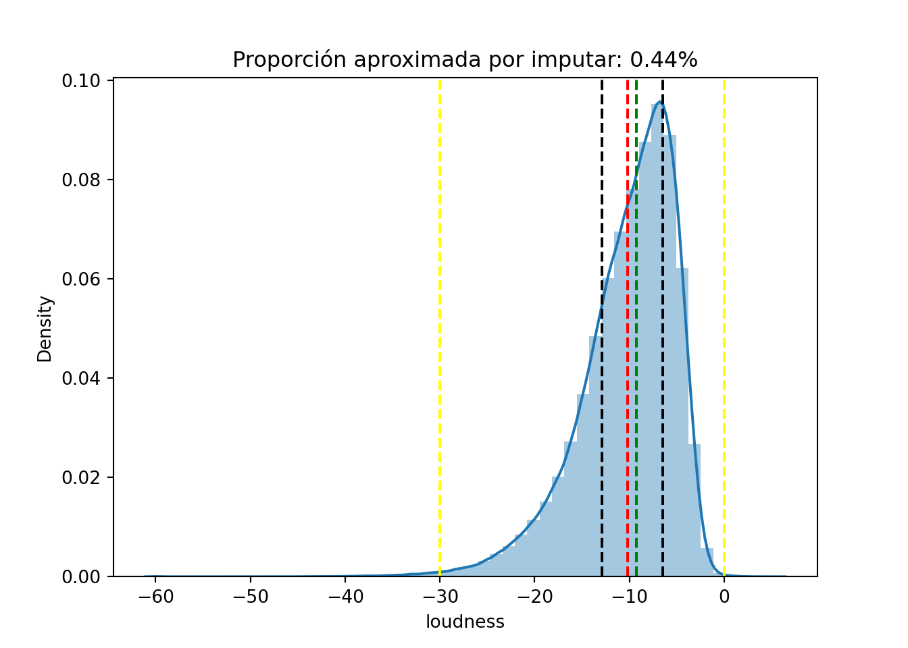
Instrumentalness
Predice si una pista no contiene voces. Los sonidos “Ooh” y “aah” se consideran instrumentales en este contexto. Las pistas de rap o de palabras habladas son claramente “vocales”. Cuanto más se acerque el valor de instrumentalización a 1,0, mayor será la probabilidad de que la pista no tenga contenido vocal. Los valores superiores a 0,5 representan pistas instrumentales, pero la confianza es mayor a medida que el valor se acerca a 1,0.
C:\Python39\lib\site-packages\seaborn\distributions.py:2619: FutureWarning: `distplot` is a deprecated function and will be removed in a future version. Please adapt your code to use either `displot` (a figure-level function with similar flexibility) or `histplot` (an axes-level function for histograms).
warnings.warn(msg, FutureWarning)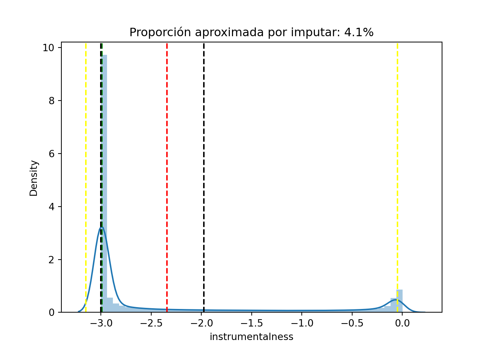
Liveness
Detecta la presencia de una audiencia en la grabación. Valores más altos de liveness representan una probabilidad incrementada de que la pista haya sido realizada en vivo. Un valor de 0.8 provee una probabilidad fuerte de que la pista sea en vivo.
C:\Python39\lib\site-packages\seaborn\distributions.py:2619: FutureWarning: `distplot` is a deprecated function and will be removed in a future version. Please adapt your code to use either `displot` (a figure-level function with similar flexibility) or `histplot` (an axes-level function for histograms).
warnings.warn(msg, FutureWarning)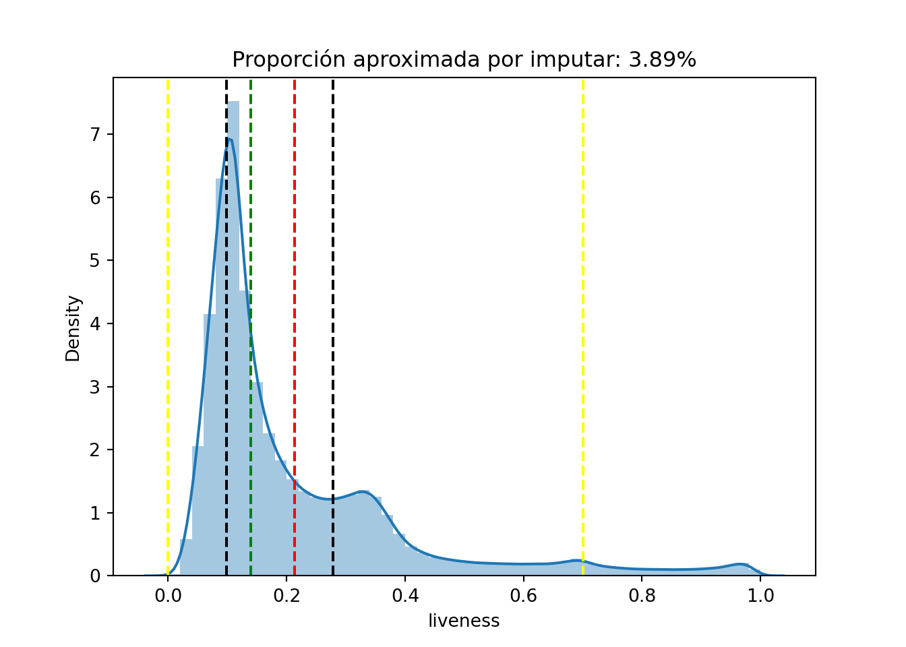
Valence
Es medida desde 0.0 hasta 1.0 que describe la positividad musical expresada por la pista. Las pistas con un sonido de alta valence suenan más positivos (e.g., felices, alegres, eufóricos), mientras que las pistas con una baja valence suenan más negativas (e.g., tristes, deprimentes, enojadas).
C:\Python39\lib\site-packages\seaborn\distributions.py:2619: FutureWarning: `distplot` is a deprecated function and will be removed in a future version. Please adapt your code to use either `displot` (a figure-level function with similar flexibility) or `histplot` (an axes-level function for histograms).
warnings.warn(msg, FutureWarning)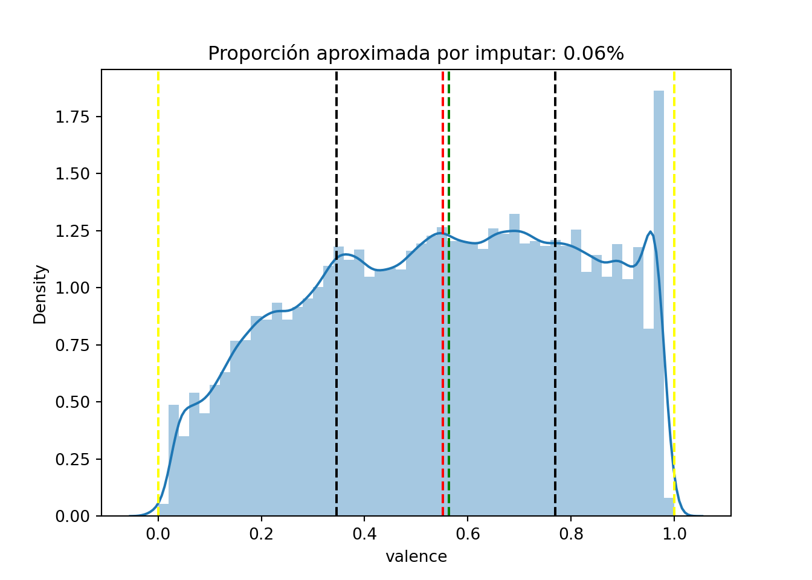
Tempo
Es el tempo general estimado de una pista en beats por minutos (BPM, por sus siglas en inglés). En terminología musical, el tempo es la velocidad o ritmo de una pieza dada y se deriva directamente de una duración promedio de beat.
C:\Python39\lib\site-packages\seaborn\distributions.py:2619: FutureWarning: `distplot` is a deprecated function and will be removed in a future version. Please adapt your code to use either `displot` (a figure-level function with similar flexibility) or `histplot` (an axes-level function for histograms).
warnings.warn(msg, FutureWarning)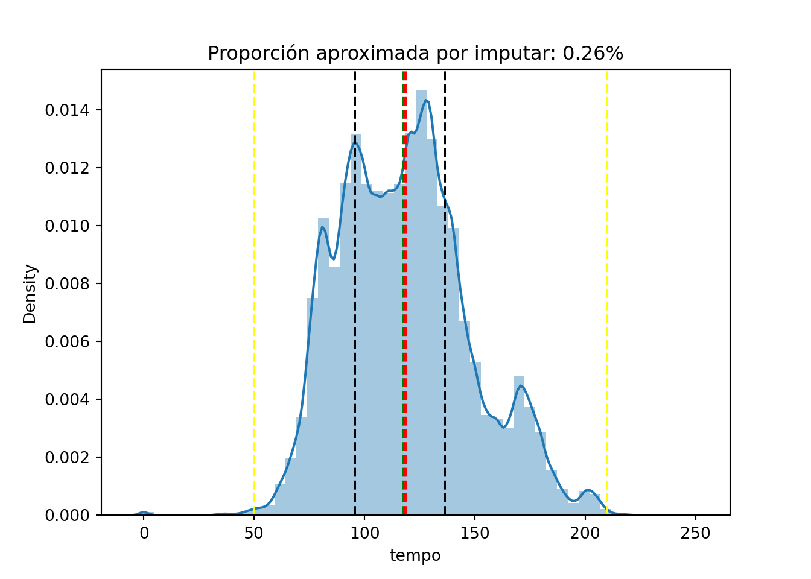
Duration_ms
Es la duración de una pieza en milisegundos. Respecto a la distribución de esta variable, se observa que la distribución de los datos es en principio aparentemente degenerada (los datos están virtual o totalmente reunidos en un punto). No obstante, tal aparente degeneración se explica por el hecho de que existe una serie de piezas cuya duración puede ser extremadamente larga.
C:\Python39\lib\site-packages\seaborn\distributions.py:2619: FutureWarning: `distplot` is a deprecated function and will be removed in a future version. Please adapt your code to use either `displot` (a figure-level function with similar flexibility) or `histplot` (an axes-level function for histograms).
warnings.warn(msg, FutureWarning)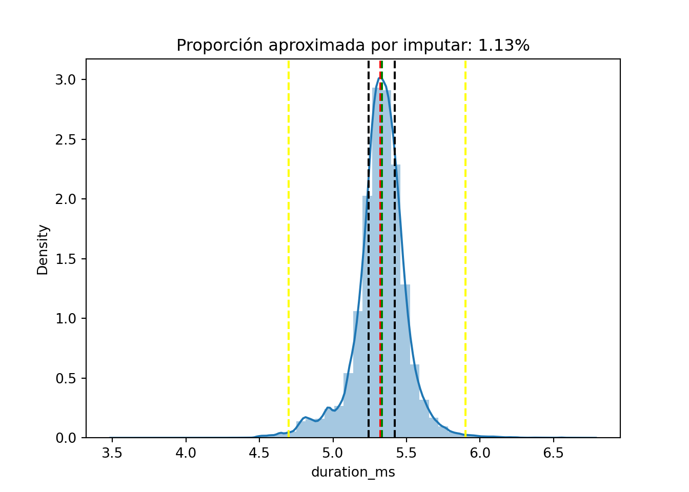
Danceability
La danceability describe qué tan adecuada es una pista para bailar, basada en una combinación de elementos musicales incluyendo el tempo, la estabilidad rítmica (rhythm stability), la fuerza del beat (beat strength), y una regularidad general. Un valor de 0.0 es menos danceable 1.0 es máximamente danceable.
C:\Python39\lib\site-packages\seaborn\distributions.py:2619: FutureWarning: `distplot` is a deprecated function and will be removed in a future version. Please adapt your code to use either `displot` (a figure-level function with similar flexibility) or `histplot` (an axes-level function for histograms).
warnings.warn(msg, FutureWarning)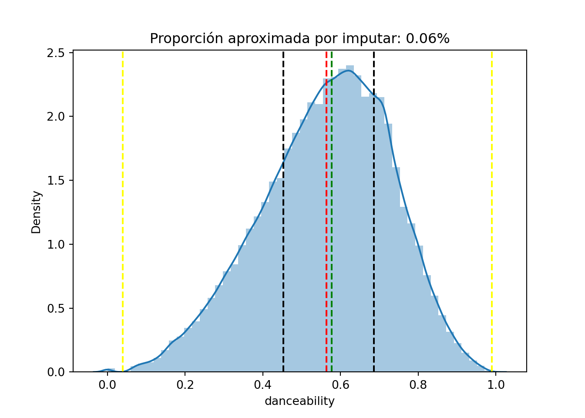
Energy
La energía es una medida desde 0.0 a 1.0 y representa una medida perceptiva de intensidad y actividad. Típicamente, las pistas energéticas se sienten rápidas, de volumen alto (loud), y ruidosas. Por ejemplo, el death metal tiene una alta energía, mientras que el preludio de Bach da un puntaje bajo en la escala. Características perceptivas contribuyen a este atributo incluyen rango dinámico, el volumen percibió, el timbre, el onset rate, y la entropía general.
C:\Python39\lib\site-packages\seaborn\distributions.py:2619: FutureWarning: `distplot` is a deprecated function and will be removed in a future version. Please adapt your code to use either `displot` (a figure-level function with similar flexibility) or `histplot` (an axes-level function for histograms).
warnings.warn(msg, FutureWarning)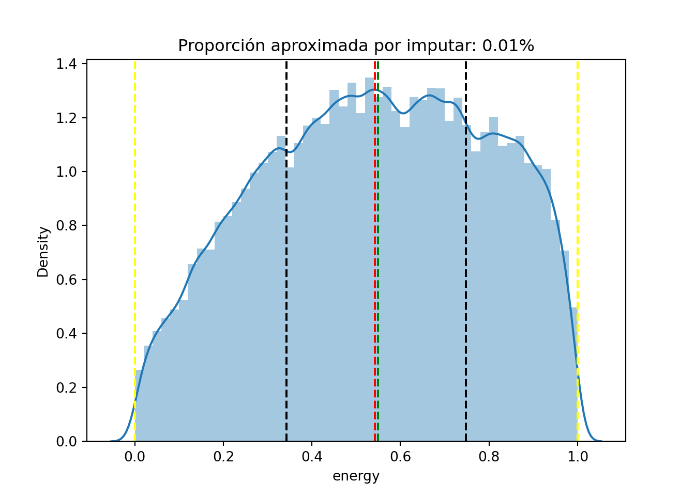
Speechiness
Esta variableetecta la presencia de palabras habladas en una pieza. Mientras más contenido hablado presenta una grabación (e.g., talk show, audio book, poesía), más cercano a 1.0 será el valor del atributo. Los valores superiores a 0.66 describen piezas que probablemente estén hechas enteramente de palabras habladas. Valores entre 0.33 y 0.66 describen piezas que podrías contener tanto música como una parte oral, ya sea en secciones o en capas, incluyendo casos como el rap. Valores menores a 0.33 con mayor probabilidad representan múscia y otras piezas non-speech-like.
C:\Python39\lib\site-packages\seaborn\distributions.py:2619: FutureWarning: `distplot` is a deprecated function and will be removed in a future version. Please adapt your code to use either `displot` (a figure-level function with similar flexibility) or `histplot` (an axes-level function for histograms).
warnings.warn(msg, FutureWarning)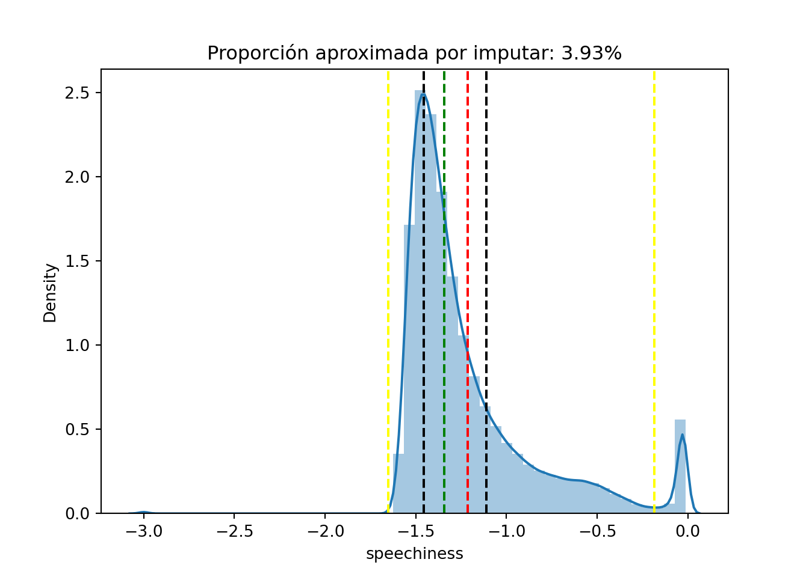
Acousticness
Una medida de confianza desde 0.0 hasta 1.0 sobre si la pieza es acústica. 1.0 representa alta confianza en que la pieza es acústica (>=0 | <= 1).
C:\Python39\lib\site-packages\seaborn\distributions.py:2619: FutureWarning: `distplot` is a deprecated function and will be removed in a future version. Please adapt your code to use either `displot` (a figure-level function with similar flexibility) or `histplot` (an axes-level function for histograms).
warnings.warn(msg, FutureWarning)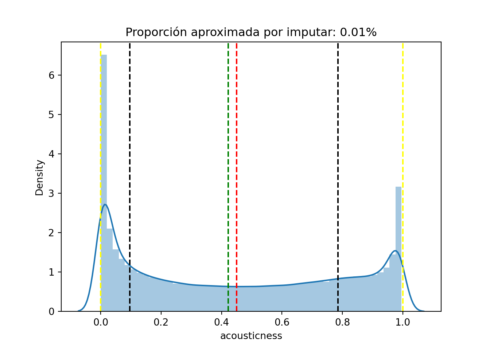
Descripción y entendimiento de variables
Esta sección del capítulo dos la hemos desarrollado en el Jupyter notebook presentado para este informe, así que no incluiremos aquella descripción en este archivo.
La exploraricón de las variables ha sido realizada mediante esta aplicación web. Así, encontramos los siguientes patrones en la data:
- A partir de 1950, para décadas cada vez más recientes, existe una mayor proporción de canciones que presentan valores cada vez más grandes de popularidad.
- Para décadas más recientes, las canciones más populares tienden a ser aquellas cuya longitud del nombre está entre 3 y 10 caracteres.
CAPÍTULO III: PREPROCESAMIENTO DE DATOS
En ese capitulo se detalla el proceso de preprocesamiento de los datos. Donde, la variable popularity es la variable dependiente del estudio por lo cual esta variable no debe pasar por ningún tratamiento de outliers y/o vacíos.
Selección de registros y atributos
Excluimos la variables “artist”, pues esta no aporta información para la predicción de popularidad de canciones. No excluimos registros.
Transformación previa a la imputación
Las variables duration_ms, speechiness e instrumentalness requirieron ser transformadas vía la función logaritmo, tras haber aumentado los valores en tales variables en 0.001, para evitar valores 0, lo cual nos permite aplicar logaritmo. Ese aumento de 0.001 se realizó porque aquellas tres variables poseen valores entre 0 y 100.
Tratamiento de datos atípicos
Se realizaron Q-Q plots para las variables numéricas, y se observó que ninguna de aquellas variables seguía una distribución gaussiana. Por ello, en vez considerar los whiskers superior e inferior usuales, creamos una aplicación web con el fin de definir, de manera interactiva, tales whiskers superior e inferior, bajo la condición que los datos atípicos que producirían tales nuevos whiskers representen menos del 10% de la variable; así hicimos, variable por variable (numérica).
Después de este paso, realizamos graficos de densidad para conocer las distribuciones e identificar los valores ouliers. Los graficos nos ayudaron a observar que, se hubiera perdido información importante en caso se hubiera usado los whisker usuales ─que se generan asumiendo una distribución normal─ debido a que estos cortaban en lugares que no representaban valores atípicos reales para las distribuciones que tienen las variables.
El siguiente paso es realizar la imputación de variables, para esto, primero se intentó imputar la mediana a los valores atípicos, pero al analizar las variables descubrimos que, las distribuciones de las variables imputadas cambiaban notablemente; por lo tanto, este método inicial quedó descartado. Luego, se eligió imputar mediante el algoritmo de KNNimputer el cual se considera un método robusto para imputar valores faltantes debido a que usa inforación de los k-vecinos más cercanos para hallar el dato faltante.
Como primer paso para usar este método se tuvo que reemplazar todos los valores atípicos con vacios, posteriormente se eligieron los parámetros de la función KNNimputer, estos fueron: - n_neighbors: 5, representa al número de muestras vecinas a utilizar para la imputación - weights: “uniform”, todos los pesos de cada vecino se ponderan por igual - metric: nan_euclidean, se utilizó la distancia euclidiana
Se intentó usar el algoritmo para todas las columnas numéricas a la vez, pero este tomaba mucho tiempo en su ejecución debido a la cantidad de datos, por eso, decidimos imputar las valores atípicos agregando solo una columna con datos por imputar a la vez. Cuando finalizó todo este proceso comprobamos que nuestra data no contenía vacios, indicador de que funcionó correctamente el algoritmo.
Para considerar que esta imputación fue la adecuada usamos dos métodos. Primero el test Kolmogorov-Smirnov que sirve para comparar la distribución de dos conjuntos de datos, comparamos entonces el conjunto de datos antes y después de imputar, pero el resultado no fue le esperado porque obtuvimos que las distribuciones no eran iguales. En ese momento nos planteamos cambiar nuevamente el método para imputar, pero, antes de esto realizamos gráficos de densidad superpuestos para ambas distribuciones y nos dimos cuenta que las distribuciones no tenían un gran cambio; por lo tanto aceptamos este método como adecuado y utilizamos la data imputada que obtuvimos en los siguientes pasos.
Tratamiento de datos vacíos
Solamente en la variable names existen valores vacíos, 71, en particular. Sin embargo, como se comentó previamente, tal columna se descartará del dataset, pues existe otra columna que produce la misma información que la columna names y que no presenta vacíos.
Creación y transformación de variables
Debido a que inicialmente la base de datos con la que contábamos tenía una reducida cantidad de columnas, de las cuales algunas no aportaban con información relevante para el objetivo del negocio. En ese sentido, transformamos las variables name, time_signature y realice_data. De las cuales obtenemos información que podrán servir para la predicción.
Name
Contiene el nombre de la canción, a partir de esta se generan dos variables:
- Name_lenght : contabiliza al cantidad de caracteres string del nombre de la canción omitiendo los espacios vacíos entre palabra y palabra.
- Words_name: contabiliza la cantidad de palabras que están presentes en el nombre de una canción.
Es importante recordar, que luego de generar ambas variables, se tiene que eliminar la variable “name” para no caer en el problema de multicolinealidad.
Release date
Indica la fecha del lanzamiento de la canción incluyendo el año, mes y día. Apartir de esat variable se crearon cuatro variables:
- Release_year: año en el que se publicó la canción
- Release_month: mes en el que se publicó la canción
- Release_days: día en el que se publicó la canción
- Release_trim: trimestre en el que se publicó la canción
Posteriormente, eliminamos la variable realise date.
Time signature
Esta variable ordinal contiene la cantidad de pulsos en un compás, para cada canción. Esta variable toma valores de 3 a 7, así que la discretizamos para que tome el valor de 0 si los valores son mayores iguales a 0 y menores que 4; y tome el valor de 1 si los valores toman valores mayores iguales a 4.
Esta recategorización se basa en el hecho que casi todas las canciones que existen actualmente en el mundo poseen un valor de 4 en time_signature.
Popularity
Para clasificar a las canciones en las categorías popular y no popular, se escogió el valor 40 como punto de corte.
Es decir, canciones con un valor de popularidad menor a 40 se asignaron a 0 (no populares); caso contrario, tales canciones se asignan a 1 (populares).
Key
La variable key representa el centro tonal de la canción, habiéndose así 12 opciones para casi todas las canciones que existen actualmente: 0, 1, …, 10, 11 .
Como el círculo de quintas es un concepto musical empleado en casi todas las canciones existentes, agruparemos en 4 categorías, a los valores de key, agrupándolos de 7 en 7, ya que esto representa centros tonales lo más cercanos posibles en el círculo de quintas.
Como el valor 0 de key representa al centro tonal C (Do), el caso más popular entre todas las canciones del planeta, agruparemos a los valores de key vía las siguientes categorías:
[5, 0, 7] => 0
[8, 3, 10] => 1
[11, 6, 1] => 2
[2, 9, 4] => 3
Descripción de variables listas para el modelamiento
| variable | count | mean | std | min | 0.25 | 0.5 | 0.75 | max |
|---|---|---|---|---|---|---|---|---|
| popularity | 586672 | 27.570053 | 18.370642 | 0 | 13 | 27 | 41 | 100 |
| duration_ms | 580069 | 5.323873 | 0.165679 | 4.700011 | 5.245019 | 5.332467 | 5.420505 | 5.899967 |
| danceability | 586343 | 0.563908 | 0.165612 | 0.0532 | 0.453 | 0.577 | 0.686 | 0.988 |
| energy | 586672 | 0.542036 | 0.251923 | 0 | 0.343 | 0.549 | 0.748 | 1 |
| loudness | 584103 | -10.114038 | 4.855248 | -29.999 | -12.838 | -9.22 | -6.474 | -0.004 |
| speechiness | 563644 | -1.259542 | 0.284709 | -1.645892 | -1.459671 | -1.354578 | -1.154282 | -0.185087 |
| acousticness | 586672 | 0.449863 | 0.348837 | 0 | 0.0969 | 0.422 | 0.785 | 0.996 |
| instrumentalness | 562639 | -2.441072 | 0.951667 | -3 | -3 | -2.993235 | -2.295849 | -0.050122 |
| liveness | 563897 | 0.188345 | 0.134634 | 0 | 0.0969 | 0.134 | 0.253 | 0.7 |
| valence | 586672 | 0.552292 | 0.257671 | 0 | 0.346 | 0.564 | 0.769 | 1 |
| tempo | 585134 | 118.585417 | 29.438423 | 50.002 | 95.757 | 117.4715 | 136.33 | 210 |
CAPÍTULO IV: DESARROLLO DEL MODELO
Escogemos la gama de modelos de clasificación para cumplir con el objetivo del proyecto. En el presente trabajo trabajamos con tres modelos teóricos:
- Árbol de clasificación CART
- Regresión logística
- Random Forest Classifier
Sin emabargo, hacemos combinaciones de estos tres modelos con los tipos de balanceo (undersample y oversample)y grid search, de forma que finalmente evaluamos 10 modelos de clasificación.
Por otro lado, luego de pre procesar los datos decidimos eliminar la variable “year_release, pues no es de utilidad como variable predictora porque el modelo se usará en el futuro para classificar canciones del 2022, en adelante. De esa forma, los nuevos años que se integren a la data podrían ser considerados como valores atípicos.
Análisis de correlación entre variables
Se observa que los colores que adoptan las casillas de la matriz de correlación son rosados, lo cual indica que las variables tienen un coeficiente de correlación que se encuentra entre 0.2 y 0.4, es decir el nivel de correlación entre variables numéricas predictoras no es muy alta.
Partición en datos de train-test (o train-test-val)
Nuestro dataset, fue dividido en grupos aleatorios más pequeños para que estos puedan ser utilizados posteriormente por los conjuntos de entrenamiento(train), testeo(test) y validación(val).Para esta partición de datos utilizamos el algoritmo de train_test_split e indicamos que la partición se haga por la cuarta parte de la cantidad de registros original. De esta forma, el grupo de entrenamiento representó el 75% de la data y el conjunto de testeo representó el 25% de la data.
Balanceo de datos (en caso aplique)
Popularidad es la variable dependiente de nuestro interes, la cual, luego de una transformación de variable, adquirió solo dos valores: 0 y 1. 0 en caso la canción no sea popular, y 1 en caso contrario. Observamos que el 73% de los valores son 0 ─no populares─ y el 27% de los valores son 1 ─populares─, lo cual podría influenciar en los resultados que muestren nuestros modelos analíticos. En este escenario, concluimos que era necesario realizar balanceo de datos.
Para el balanceo de datos, decidimos usar dos tipos de balanceo: undersampling y oversampling. Por un lado en la estrategia undersampling, usamos el algoritmo RandomUnderSampler para eliminar los registros de canciones que no son populares, quedandonos con una cantidad de registros igual a la cantidad de registros que son populares. Por otro lado, en la estrategia oversampling, usamos el algoritmo Smote para agregar registros de canciones que son populares, quedandonos con una cantidad de registros igual a la cantidad de registros que no son populares. Antes de realizar el balanceo verificamos también si los registros contaban con vacíos, al no ser el caso se procedió a crear dos nuevos conjuntos de datos “x_train_smote” y “y_train_smote” para el caso del balanceo de datos usando el algoritmo Smote, y se creó los conjuntos de datos “x_resampled” y “y_resampled” para el caso del balanceo de datos usando el algoritmo RandomUnderSampler, estos nuevos conjuntos balanceados fueron utilizados posteriormente para probar modelos.
Selección de parámetros (en caso aplique)
Selección del mejor modelo (Evaluación de modelos en diferentes escenarios, comparación de las métricas de ajuste de los modelos al realizar predicciones con datos del test y/o validación)
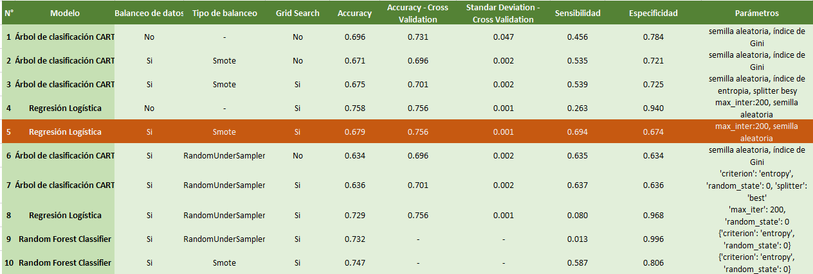
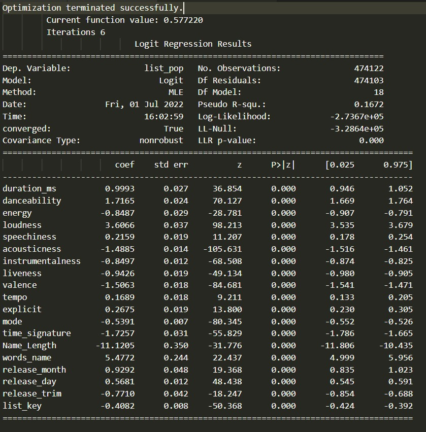
Descripción de la estructura del modelo seleccionado (tipo de modelo y parámetros elegidos)
CAPÍTULO V: CONCLUSIONES
CAPÍTULO VI: RECOMENDACIONES
- El dataset con el que trabajamos, que fue descargado de Kaggle, presentaba diversos problemas:
- Esta consistía principalmente de canciones no populares, así que los modelos trabajados predecían no popularidad, en vez de popularidad.
- Esta contiene una fila con data errónea, pues a una banda chilena se le asignan valores incorrectos respecto a la fecha de publicación de las canciones. Por ello, recomendamos que se utilice el identificador Spotify de las canciones del dataset, para scrapear la información actualizada de tales canciones. Además, añadir canciones populares al dataset, para que los modelos a emplearse puedan predecir popularidad, a partir de una data mejor balanceada respecto a canciones populares y no populares.